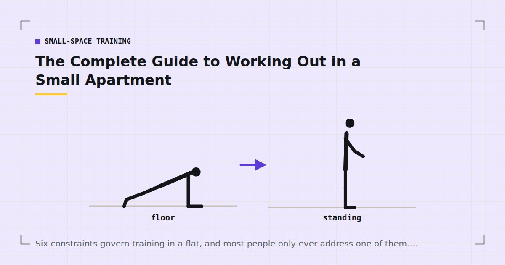

Small-Space Training
The Complete Guide to Working Out in a Small Apartment
Six constraints govern training in a flat, and most people only ever address one of them. Here is all six, what each actually rules out, and what to do instead.

Training in a flat is usually framed as a space problem. It is rarely only that. People who solve the space problem still get complaints from downstairs, still find their knees hurt on the tiles, still stop training in week six because the mat lives in a cupboard.
There are six constraints. This guide takes each in turn, says what it actually rules out, and gives you the workaround.
The six constraints
- Floor space — how much clear area you have.
- Noise — what your neighbours can hear.
- Flooring — what you are standing on.
- Ceiling height — whether you can reach overhead.
- Storage — where equipment lives between sessions.
- Other people — partners, housemates, children.
Most flats have three or four of these. Very few have all six, and the ones that do are still workable.
1. Floor space
What you actually need: about 2 metres by 1. That covers nearly every home exercise, because almost everything is bounded by your height lying down. 2 by 2 metres covers everything including travelling movements.
Below about 1.8 by 0.7 metres you are limited to standing and kneeling work, which is still a complete session — see standing workouts.
What it rules out: bear crawls, lateral skater steps, and anything travelling. That is genuinely all.
Finding space you did not know you had: the hallway is usually the longest uninterrupted floor in a flat and almost nobody considers it. The strip beside the bed is usually exactly mat-sized. And the diagonal of a room is longer than either wall, so a diagonal placement often fits where a square one does not.
The per-exercise measurements are in how much floor space you need, and the arrangement question in setting up a home gym corner. For the extreme case, training in a studio flat is a full walkthrough.
2. Noise
The constraint people most often get wrong, because there are three kinds of noise and the usual advice addresses one.
Impact is your bodyweight landing. Removing jumps solves it. Structure-borne vibration is force transmitted into the joists, which is why fast mountain climbers carry despite involving no jumping. Airborne noise is feet slapping, breathing and music, and it matters most through a stud wall rather than a floor.
The three highest-return changes, in order: remove every exercise where a foot leaves the floor; move your mat within a metre of a supporting wall, since floors deflect least near their supports; and cover hands as well as feet with a dense mat.
What it rules out: jumping, skipping, and fast hand-on-floor work. Every one has a substitute — the full table is in quiet home workouts, with the conditioning version in no-jump cardio and an interval session in apartment-friendly HIIT.
None of this costs training quality. Muscle growth tracks weekly training volume,1 and light loads taken close to failure produce comparable hypertrophy to heavy ones.2 Neither depends on impact.
3. Flooring
Carpet and hard floors fail in opposite directions.
Carpet is comfortable and quiet, and unstable. Single-leg work such as Bulgarian split squats becomes a balance exercise rather than a leg exercise. Fix it by putting something firm under the standing foot.
Hard floors are stable and uncomfortable. Kneeling and floor work become unpleasant, and unpleasant exercises get quietly dropped — usually the core and glute work a home routine is already short of. Fix it with a mat covering roughly two metres by one.
The one genuinely unsafe combination: socks on laminate, vinyl or polished wood. Feet slide without warning during lunges and split squats. Barefoot or shoes, never socks.
The full comparison is in carpet vs hard floor, and mat selection in exercise mats for noise reduction.
4. Ceiling height
What you need: your height plus about 60 centimetres to reach comfortably overhead — roughly 2.4 metres for someone 1.8 metres tall. Standard ceilings are exactly borderline, which is why so many people find overhead work awkward rather than impossible. Remember to add your mat thickness.
What it rules out: overhead pressing with elevated feet, handstand work, jumping, and overhead reaching in warm-ups. Four things, and only four.
The workaround: kneeling. Almost any standing overhead movement can be done kneeling, which buys you 60 centimetres and makes the movement stricter into the bargain. A kneeling band press is the best replacement for an overhead press.
Four of the five movement patterns are entirely unaffected by ceiling height. The detail is in low-ceiling workouts.
5. Storage
Not obviously a training constraint, and one of the most consequential.
Equipment stored perfectly is equipment that requires retrieving, and retrieving is friction. The design target is fifteen seconds from deciding to train to starting. That rules out lofts, high shelves, anything behind other things, and anything in a different room from where you train.
A rolled mat standing on its end takes about fifteen centimetres square of floor. Bands live on a hook. The whole useful equipment list occupies less than a suitcase — the options are in how to store home gym equipment in a tiny flat.
If retrieving your equipment takes longer than your warm-up, the storage is the constraint, not the flat.
6. Other people
The constraint least often written about and frequently the binding one.
A partner or housemate makes visible equipment a negotiation. Keep the visible footprint genuinely small and prefer equipment that disappears — bands over anything rigid, a doorway bar that comes down in five seconds over anything freestanding.
Children change the session structure rather than the exercises. Sessions must survive interruption, which means straight sets rather than circuits and an exercise order such that a session abandoned at forty per cent still trained the things that mattered — see how to work out at home with kids around and the worked session in the 30-minute workout for busy parents.
Someone asleep is a stricter version of the noise constraint, where sudden noise rather than steady noise is what wakes people and the bed must not be used as equipment — see quiet bedroom workouts and the silent ab workout.
Auditing your flat in ten minutes
Do this once with a tape measure and write the answers down. It removes a recurring source of friction and takes ten minutes.
Find your longest clear run
Not the biggest open area — the longest straight line of floor with nothing on it, that will stay clear. Measure length and width.
Measure the height where you would stand
Stand there and reach overhead. Note whether you clear it, and add your mat.
Identify what is below you
Another flat, a communal area, or the ground. This determines how much the noise constraint actually applies.
Identify one usable door frame
For a pull-up bar or a band anchor. The bathroom door is often the better choice because it is used less.
Check the floor is level
A spirit level or a phone app. Carpet hides slopes, and a slope quietly skews single-leg work.
Decide where equipment lives
Within arm's reach of the training spot, visible rather than tidy.
A programme that fits every constraint
Here is a full-body session that works in two metres by one, makes no impact noise, needs no overhead clearance, and stores in a corner.
- Bulgarian split squat — 3 × 8–12 each leg. Rear foot on a chair.
- Push-up — 3 × 10–15. Slow descent to progress.
- Inverted row or band row — 3 × 10–15.
- Single-leg glute bridge — 3 × 12 each side.
- Floor pike push-up — 3 × 8–12. No overhead clearance needed.
- Dead bug — 3 × 10 each side.
All five movement patterns, thirty minutes, three times a week. That clears the adult recommendation for muscle-strengthening activity comfortably.3 It is the three-day split with the exercise selection constrained, and it progresses through the ladders in bodyweight exercise progressions.
For the aerobic half, walking is the obvious answer. If you want conditioning at home, use no-jump cardio, and if you have stairs, stair workouts are the best free option in any building.
What a week actually looks like
The session above is the building block. Here is the week it fits into, with the flat-specific decisions already made.
| Day | Session | Flat consideration |
|---|---|---|
| Monday | Full body, 30 min | Evening, mat near the supporting wall |
| Tuesday | Walk, 30–40 min | Outside; covers the aerobic half |
| Wednesday | Full body, 30 min | As Monday |
| Thursday | Walk, or stairs | Stairwell if the weather is poor |
| Friday | Full body, 30 min | Shorten to 20 if the week has been long |
| Weekend | Rest, or something outdoors | Balcony or park if available |
Three strength sessions and two or three walks. The walks matter more in a flat than they might elsewhere, because indoor conditioning is the thing the noise constraint restricts most, and walking sidesteps it entirely while covering the aerobic recommendation.5
Note what is not in the week: a separate conditioning session at home. That is deliberate. In a flat, home conditioning is where the constraints bite hardest and the compromises are largest, so pushing it outdoors is usually the better trade. If you do want it indoors, apartment-friendly HIIT is built for exactly this.
When the flat genuinely is the problem
Most of this guide argues that flats are more workable than people assume. Two situations where that is not true, and where the honest answer is to train elsewhere at least sometimes.
A building with a genuine structural noise problem. Some conversions and older buildings transmit so readily that even careful low-impact training is audible. If you have removed all impact, moved to a supporting wall, matted the floor and still get complaints, the building is the constraint rather than your technique. A balcony, a stairwell, a park or a gym day pass once a week is a more productive response than continuing to reduce your training — the outdoor options are in balcony and garden workouts.
A flat you cannot keep a clear strip in. If every square metre is genuinely committed and clearing space is unavoidable every session, that friction will eventually win. The realistic responses are to train standing only, which needs under a square metre, or to accept that home is for strength and somewhere else is for everything else. Standing workouts covers the first.
Neither is a failure of willpower. Some constraints are properties of the building rather than of the person in it, and recognising which you have saves months of trying to solve the wrong problem.
What to buy, if anything
Train with nothing for two months first. Equipment does not create consistency, and you will then know what you actually miss rather than what you imagined you would.
After that, in order:
1. Something to pull against. The one genuine gap in bodyweight training. Resistance bands anchored in a door hinge, or a doorway pull-up bar if a frame suits it. This is the only purchase that changes what is trainable rather than what is comfortable — see rows at home and the doorway pull-up bar guide.
2. A dense mat, if you are on a hard floor or above a neighbour. Around 12 to 15 millimetres, covering two metres by one.
3. One adjustable weight or a loaded rucksack, once bodyweight variations genuinely run out — which takes most people considerably longer than expected.
That is the whole list, and the reasoning is in the minimalist home gym guide.
What is not actually a constraint
Three things people cite that do not stand up.
“There is not enough room to get a proper workout.” A complete strength session fits on an exercise mat. The only exercises a small flat rules out are travelling movements, which are conditioning rather than strength work and have substitutes.
“I cannot train hard without disturbing people.” Intensity is a physiological state rather than a movement pattern. You can reach genuinely vigorous effort with both feet on the floor, and the talk test will confirm it.4
“I need equipment to make progress.” Eventually, for legs and for maximal strength. Not for a year or more of consistent training, and the evidence on that is in can you build muscle with bodyweight only.
The genuine constraints are the six above, and all six have workarounds. What actually stops people is not the flat — it is the accumulation of small frictions between deciding to train and starting, which is why storage and placement get as much space in this guide as exercise selection.
Where to start
Do the ten-minute audit. Then run the session above three times a week for eight weeks, using the 4-week beginner plan first if you are new to training.
If noise is your binding constraint, start with quiet home workouts. If it is space, start with how much floor space you need. If it is other people, start with working out with kids around.
And if the honest problem is that sessions keep not happening rather than that the flat is too small, none of this is the fix. Start instead with how to actually stick to a home workout habit.
Frequently asked questions
Can you get a good workout in a small apartment?
Yes. A complete full-body strength session fits in about two metres by one, which is roughly the footprint of an exercise mat plus a little room. The only exercises a small flat genuinely rules out are travelling movements, and those have substitutes.
How do I work out in a flat without annoying neighbours?
Remove every exercise where a foot leaves the floor, move your training area within about a metre of a supporting wall rather than the middle of the room, and cover both hands and feet with a dense mat. Those three changes address most complaints.
What are the main constraints of training in a small flat?
Six: floor space, noise, flooring surface, ceiling height, storage, and other people in the household. Most flats have three or four of them, and each has a workaround.
Do I need equipment to train in a small apartment?
Only for pulling, which is the one structural gap in bodyweight training. Resistance bands or a doorway pull-up bar solve it cheaply. Train with nothing for two months first, then buy what you have actually missed.
How much ceiling height do I need to work out?
Your height plus about 60 centimetres for comfortable overhead reaching. Standard ceilings are borderline. Kneeling buys roughly 60 centimetres, which makes almost any overhead movement available again.
Why does my home workout routine keep failing in a small flat?
Usually friction rather than space. If your mat lives in a cupboard, if the spot needs clearing first, or if equipment is in another room, each is a decision point where the session gets lost. Aim for fifteen seconds from deciding to train to starting.
Is carpet or hard floor better for home workouts?
Neither overall. Carpet is comfortable and quiet but unstable for single-leg work; hard floors are stable but uncomfortable and noisier. Put something firm under your standing foot on carpet, and use a mat on a hard floor.
Sources and further reading
- Schoenfeld BJ, Ogborn D, Krieger JW. “Dose-response relationship between weekly resistance training volume and increases in muscle mass: A systematic review and meta-analysis.” Journal of Sports Sciences, 2017;35(11):1073–1082. PubMed.
- Schoenfeld BJ, Grgic J, Ogborn D, Krieger JW. “Strength and Hypertrophy Adaptations Between Low- vs. High-Load Resistance Training: A Systematic Review and Meta-analysis.” Journal of Strength and Conditioning Research, 2017;31(12):3508–3523. PubMed.
- World Health Organization. WHO Guidelines on Physical Activity and Sedentary Behaviour. 2020.
- Mayo Clinic. Exercise intensity: How to measure it.
- NHS. Physical activity guidelines for adults aged 19 to 64.
- NHS. Strength and Flex exercise plan.
Comments
Comments are not enabled yet. Add a hosted comment embed (Disqus, Commento, Giscus) inside this container when you are ready.